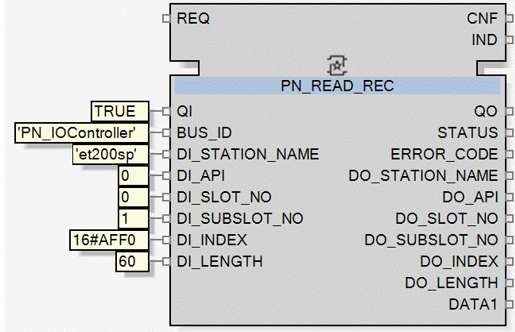

Use the PN_READ_REC function block to read a maximum of 16588 bytes of PROFINET record data from a specified IO-Device upon the occurrence of a triggering event. Refer to help for the Standard.IoProfinet library for details about the PN_READ_REC function block.
To configure the PN_READ_REC function block:
In the Function Blocks Network editor, add the PN_READ_REC function block from the library .
Configure the data inputs by specifying the IO-Device data to read:
REQ links to the event that triggers the read operation.
BUS_ID identifies the PROFINET IO-Controller (bus master) of the type Standard.IoProfinet.PN_IOController that you added when creating your PROFINET network.
DI_STATION_NAME is the Station Name of the PROFINET IO-Device you added to the PROFINET network.
DI_API defines the Application Process Identifier (API also called Profile ID) of the submodule, and can be found in the submodule GSDML file.
DI_SLOT_NO is the module slot number.
DI_SUBSLOT_NO is the module subslot number.
DI_INDEX is the index of the data record to read.
PN_READ_REC function block includes a link to a list of Standard PROFINET Indexes.
DI_LENGTH is the number of bytes of data to read.
For example:

The operation executes when:
REQ = 1, and
QI = TRUE
After execution, the requested data can be accessed from the data outputs.
After the operation concludes, check the STATUS data output text value, which can display:
Request OK: Request was processed and sent to PROFINET IO-Controller.
Request Error: Request was not processed. Refer the Applications Design Guidelines topic Runtime Device and Cyclic Logs for more information.
Request Ignored: Request was ignored.
Response OK: Response was received from the PROFINET IO-Device
Response Error: Response contains one or more detected errors. Check error code list.
If the STATUS response is:
Request Error: Refer the Applications Design Guidelines topic Runtime Device and Cyclic Logs for more information..
Response Error: Check both the Device and Cyclic Logs and the detected error code lists.
PN_READ_REC function block includes a link to PROFINET detected error codes.